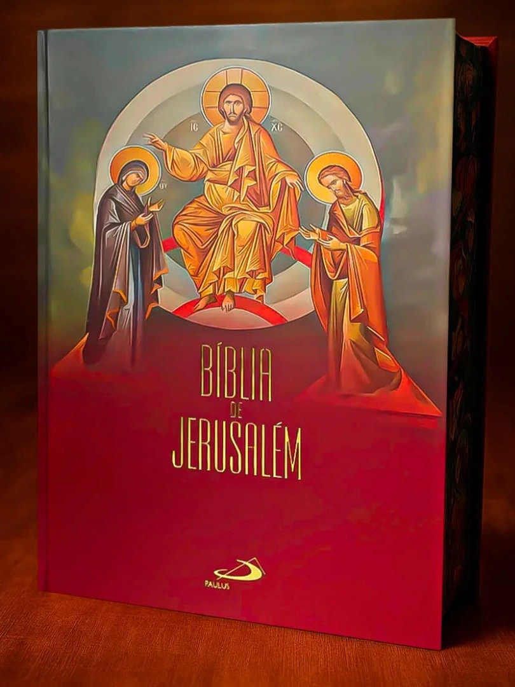
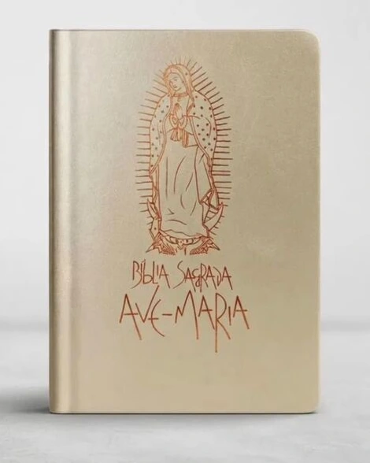
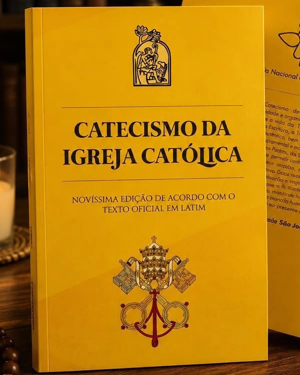
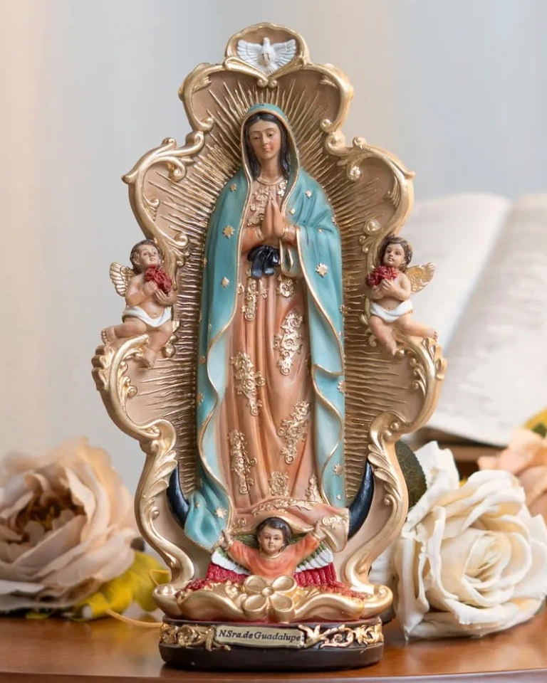
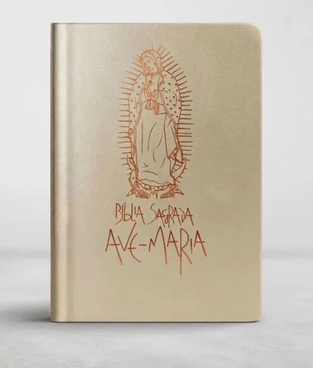

Comunidade católica no WhatsApp
Aproxime-se da sua fé.
Descubra oportunidades, livros e artigos católicos que podem ajudar você a conhecer, aprofundar e viver melhor sua fé.
Comunidade gratuita • Mais de 1.000 católicos

Nossa comunidade
Mais de 1.000 católicos
Uma comunidade de pessoas que compartilham o desejo de conhecer mais profundamente a fé católica e encontrar oportunidades para fortalecer sua caminhada espiritual.
Entrar no grupoO que você encontra
O que você encontra no Gratia
Os tipos de produtos que aparecem nas oportunidades compartilhadas pela comunidade.
-
Bíblias
Edições para leitura, estudo e oração.

-
Livros espirituais
Obras que ajudam a meditar e aprofundar a fé.
-
Catecismos
Para conhecer e compreender os ensinamentos da Igreja.

-
Artigos católicos
Crucifixos e outros itens ligados à vivência da fé.

Como funciona
Oportunidades que chegam até você.
Compartilhamos ofertas, condições especiais e oportunidades de produtos católicos diretamente em nossa comunidade.
Exemplos ilustrativos de mensagens publicadas no grupo, sem garantia de preço ou disponibilidade atuais. Preços, cupons e disponibilidade podem mudar conforme as lojas.

O propósito do Gratia
Muito além de ofertas.
Acreditamos que conhecer a fé também passa por ter acesso aos instrumentos que nos ajudam a aprofundá-la. Por isso, o Gratia busca aproximar pessoas de livros, Bíblias e artigos católicos que podem contribuir para uma caminhada espiritual mais consciente e profunda.
Os materiais que compartilhamos são instrumentos de auxílio, nunca uma condição para viver a fé.
Sua caminhada de fé pode ganhar novos instrumentos.
Conheça nossa comunidade, acompanhe as oportunidades e aproxime-se ainda mais da riqueza da fé católica.
Entrar no grupo Gratia